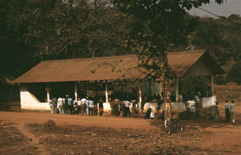

16. Oratory, Formal Speaking, and other Stylized Forms
Oratory and rhetoric: Burundi; Limba. Prayers, curses, etc. Word play and verbal formulas. Names.
I
The art of oratory is in West Africa carried to a remarkable pitch of perfection. At the public palavers each linguist [official spokesman] stands up in turn and pours forth a flood of speech, the readiness and exuberance of which strikes the stranger with amazement, and accompanies his words with gestures so various, graceful, and appropriate that it is a pleasure to look on, though the matter of the oration cannot be understood. These oratorical displays appear to afford great enjoyment to the audience, for every African native is a born orator and a connoisseur of oratory, a fact that becomes very manifest in the Courts of Justice in the Protectorate, where the witnesses often address the juries in the most able and unembarrassed manner; I have even seen little boys of eight or ten hold forth to the court with complete self-possession and with an ease of diction and a grace of gesture that would have struck envy into the heart of an English member of Parliament (R. A. Freeman on his visit to Ashanti in 1888, quoted in Wolfson 1958: 193)
This comment on Ashanti rhetoric in the nineteenth century could be paralleled by similar remarks about the oratorical ability of many African peoples. Of the Bantu as a whole a linguist writes that they are ‘born orators; they reveal little reticence or difficulty about expression in public. They like talking. They like hearing themselves in an assembly …’ (Doke 1948: 284). We hear too of the significance of oratory among the un-centralized Anang Ibibio, (Messenger 1959; 1960: 229) or Ibo of Eastern Nigeria. Of the Ibo, indeed, Achebe has stated categorically that ‘the finest examples of prose occur not in those forms [folktales, legends, proverbs, and riddles] but in oratory and even in the art of good conversation …. Serious conversation and oratory … call for an original and individual talent and at their best belong to a higher order’ (Achebe in Whiteley 1964: vii). Similar comments on the relevance of oratory could be multiplied.1 It is not in fact surprising that many peoples who do not use the written word for formalized transactions or artistic expression should have developed the oral skill of public speaking to perform these functions.
Yet for all the passing references to the significance of oratory, there seems to be little detailed documentation on the actual practice of public speaking as a skill in its own right. It is true that oratory, a form in which oral characteristics are of the essence, does not possess the same easily recognized ‘literary’ qualifications that can be discerned, in, say, panegyric poetry or fictional narrative where parallels in literate cultures are easy to find. Oratory falls between, on the one hand, highly conventional and recognized literary expression and, on the other, informal everyday conversation. But even though the line between rhetorical and informal speech is not easy to draw, oratory in many African societies would seem to deserve further consideration than it has yet received. The speeches of classical antiquity have, in one form or another, long been counted as one form of literary expression with aesthetic as well as purely practical appeal, and it is not ridiculous to regard these as comparable to some of the oratory of African societies. Though little detailed material has been published and the account given here is thus exceedingly thin, it seems worth including a few points and examples, not least if this leads to further investigation.
In Africa, as in antiquity, one of the commonest contexts for public speaking is that of a law case, a formalized occasion which allows both litigants and judges to display their rhetorical skill. Their conscious aims, doubtless, are clearly functional; but aesthetic considerations are also involved, if only to add to the persuasiveness of the speech. Some of these speeches are highly sophisticated and skilled. We often hear of the use of proverbs on such occasions to appeal to the audience or make a point with extra forcefulness. In the case of the Anang Ibibio their famous eloquence arises largely from their skilful use of proverbial maxims, particularly in court. Long speeches are given by plaintiff and defendant to explicate their cases, lasting as long as an hour each and listened to with rapt attention. The Ibibio audience is particularly appreciative of a speech that abounds in original or unusual proverbs to capture their interest, or that cleverly introduces an apposite saying at just the crucial moment (Messenger 1959 and Ch. 15 above).

Figure 24. Thronged Limba law court, site of oratory (photo Ruth Finnegan).
The formalized and literary aspects of legal rhetoric can even take the extreme and unusual form of a portion of the speeches being delivered as song. This is apparently sometimes the case in Mbala litigation in the Congo. The formal interchange between the opponents is partly conducted through spoken argument, but this is then followed by a snatch of allegorical song in which the supporters of each party join with voice and drum, the two sides drawn up to face each other. An extract from one case is quoted as follows:
| 1ST PARTY | I was in my house and would have liked to stay. But he has come and wants to discuss the matter in public. So I have left my house and that is why you see me here. |
| (sings). | I am like a cricket. I would like to sing, but the wall of earth that surrounds me prevents me. Someone has forced me to come out of my hole, so I will sing. |
| (continues argument). | Let us debate the things, but slowly, slowly, otherwise we will have to go before the tribunal of the white people. You have forced me to come. When the sun has set, we shall still be here debating. |
| (sings). | I am like the dog that stays before the door until he gets a bone. |
| OPPONENT | Nobody goes both ways at the same time. You have told this and that. One of the two must be wrong. That is why I am attacking you. |
| (sings). | A thief speaks with another thief. It is because you are bad that I attack you.2 |
Political discussions are also obvious occasions for oratory—indeed the two are often closely related. At the local level at least, there are not infrequently rules about the order in which such politicians must speak, and accepted conventions of style, content, and set phraseology which speakers more or less follow. Such political speeches often shade into other formal and public occasions involving, say, speeches of welcome, religious injunctions, sermons, harangues, or solemn marriage transactions.3
A few of the orators seem to be real professionals, as in the case of the Ashanti ‘linguists’ described by Freeman in the quotation given earlier. These men were the spokesmen of kings and chiefs among the Akan. Not only were they charged with repeating the words of their patron after him, acting as a herald to make it clear to all his audience and to add to his utterances the extra authority of remoteness, but they were also expected, in the words of Dan-quah, to ‘perfect’ the speech of a chief who was not sufficiently eloquent, and to elaborate his theme for him. The linguist should not add any new subject-matter, but
he may extend the phrases and reconstruct the sentences and intersperse the speech with some of the celebrated witty and philosophical reflections for which they are justly celebrated to the credit of both himself and his Chief …
(Danquah 1928: 42).
In another description:
When the Linguist rises up to speak in public, he leans upon the King’s gold cane, or a subordinate linguist holds it in front of him. He is going to make a speech now, and it is sure to be a happy effort. It will sparkle with wit and humour. He will make use freely of parables to illustrate points in his speech. He will indulge in epigrams, and all the while he will seem not to possess any nerves—so cool, so collected, so self-complacent! He comes of a stock used to public speaking and public functions.
(Hayford 1903: 70).
The use of heralds whose sole function is to repeat the words of the speaker and thus endow them with greater dignity or volume is not without other parallels in West Africa, and is a practice that has lent itself well to the situations, under colonial rule at least, where the speeches of administrator or missionary were transferred, sentence by sentence, through the intermediary of an interpreter.
Most speeches, however, seem in fact to be made not by professionals but by experts who acquired their skills in the course of carrying out their various political, religious, or just good-neighbourly duties in the society. Such men—like the Limba ‘big men’ described below—are recognized by others as skilled in speaking, reconciling, and persuading, and it is partly through such skill that they retain their positions; but this is merely one aspect of their specialized functions as political leaders, judges, or public figures. There are also those who merely possess a general ability to speak well—people skilled more in the art of conversation and the use of proverb and metaphor to enrich their speech than in the more formal arts of public oratory. There is no general rule about the background and training of those regarded as particularly eloquent, for this varies according to the structure of the society in question.
How far oratory varies not only between societies but even in different groups within one state may be illustrated from the kingdom of Burundi, one of the few areas in which some detailed investigation of rhetoric has been carried out. This can be followed by a brief account of the very different society of the Limba of Sierra Leone.
Traditional Burundi (for the time described by Albert (1964, based on fieldwork 1955–57). was a highly organized state, marked by an extreme degree of hierarchy between the various ranks in the community—in particular between the cattle-keeping lords (the Tutsi) and the farmer-peasant class (the Hutu). The different classes have their own special speech patterns, and there are also stylized ways of address considered appropriate according to the status, sex, or age of the speaker, and to the particular personal or political relationships of those directly involved. The rules of rhetoric can thus be closely related to the social and political structure.
In Burundi, eloquence is thought to be of the greatest significance, both practical and aesthetic, whether it is used in legal cases, political transactions, petitions, the stylized phrases of polite intercourse, or the art of elegant conversation:
Speech is explicitly recognised as an important instrument of social life; eloquence is one of the central values of the cultural world-view; and the way of life affords frequent opportunity for its exercise … Argument, debate, and negotiation, as well as elaborate literary forms are built into the organization of society as means of gaining one’s ends, as social status symbols, and as skills enjoyable in themselves
(Albert 1964: 35).
It is among the upper classes above all that the ideals of oratorical ability are most stressed. The very concept of good breeding and aristocracy, imfura, implies ‘speaking well’ as one of its main characteristics. Aristocratic boys are even given formal education in speech-making from the age of about ten. Albert describes the content of their training:
Composition of impromptu speeches appropriate in relations with superiors in age or status; formulas for petitioning a superior for a gift; composition of amazina, praise-poems; quick-witted, self-defensive rhetoric intended to deflect, an accusation or the anger of a superior. Correct formulas for addressing social inferiors, for funeral orations, for rendering judgment in a dispute, or for serving as an intermediary between an inferior petitioner and one’s feudal superior are learned in the course of time as, with increasing age and maturity, each type of activity becomes appropriate. Training includes mastery of a suitable, elegant vocabulary, of tone of voice and its modulation, of graceful gestures with hand and spear, of general posture and appropriate bodily displacements, of control of eye-contacts, especially with inferiors, and above all, of speedy summoning of appropriate and effective verbal response in the dynamics of interpersonal relations.
(Ibid.: 37)
As a result of such formal training and unconscious assimilation of the practice of eloquence, Tutsi men of the upper classes acquire a consciousness of superior education and elegance of speech. The accepted stereotype, quite often lived up to in practice, is that the aristocrat possesses grace and rhetorical ability in speech and bearing, marked particularly by his characteristic dignity and reserve in public address.
The formal speech of peasants is expected to be rather different. Social pressures ensure that peasants are aware of the tactlessness of producing an elegant aristocratic-type speech before a superior. In their own strata, however, they may speak with equal dignity and ability—for instance, as judge, in council, or in funeral orations. There are some set differences. The Hutu use a different accent, and the figures of speech tend to reflect a peasant rather than an aristocratic background and to be drawn from agriculture rather than herding or the courtly life. ‘The gestures of the muscular arms and heavy set body and the facial expressions will not be like those of the long-limbed, slim-boned … Batutsi herders, but they will not lack studied grace and dignity (Ibid.: 42).
The recognized stylistics in Rundi oratory, marked particularly in the case of the aristocrats, are dignity of bearing and speech, enhanced, on occasion, by effective use of the rhetorical technique of silence. There is also careful attention to stance, gesture, modulation of the voice, and grace and elegance of vocabulary according to the criteria of Rundi culture. The highest ideal of public speaking, in Rundi eyes, is that associated with an umushingantahe, a recognized elder and judge. He is expected to be
intelligent, in complete command of the arts of logic, a fine speaker—i.e., he speaks slowly and with dignity, in well-chosen words and figures of speech; he is attentive to all that is said; and he is an able analyst of logic and of the vagaries of the human psyche.
(Albert 1964: 45)
The position of an umushingantahe depends both on a prolonged experience of legal cases and on wealth for the expensive initiation party. Others too, however, can use the same type of rhetorical style. It is one considered particularly appropriate in political speeches of advice or persuasion before a superior, or in serious decision-making and problem-solving. On the other hand, rhetorical fireworks are more to be expected when individuals are trying to forward their own interests as litigants in a law case, or in personal petitions to a superior.
A further characteristic of Rundi rhetoric is the premium placed on elegance and appropriateness rather than on literal truth. This has a practical value. It is known that a man is more likely to be able to defend himself on the spot by rapid and plausible falsehood, mixed with a suitable amount of flattery, than by a careful telling of the truth. But there is also an aesthetic aspect—graceful appropriate speech is considered attractive in its own right. Allusiveness, often through figures of speech, is prized in both speech-making and polite social intercourse. Even a slight request may be addressed to a superior with stylized formality and oblique allusion. Thus a petition by a poor man for a trifling gift like a new pair of shoes to replace his worn-out ones is expressed through circumlocution. ‘One does not hide one’s misfortunes; if one tries to hide them they will nevertheless soon be revealed. Now, I know a poor old man, broken in health and ill; there is a spear stuck in his body and he cannot be saved!’ By this he indicates his old shoes, so ragged that one is being held together by a safety-pin (the ‘spear’) (Ibid.: 50–1).
It is not only the style and content that are conventionally laid down for Rundi speeches, but in some cases the general setting as well. The rules of precedence are strictly observed, in keeping with a society in which ranked hierarchy is of such significance. Thus the order in which individuals speak in a group depends on their seniority:
The senior person will speak first; the next in order of rank opens his speech with a statement to the effect, ‘Yes, I agree with the previous speaker, he is correct, he is older and knows best, etc’ Then, depending on circumstances and issues, the second speaker will by degrees or at once express his own views, and these may well be diametrically opposed to those previously expressed. No umbrage is taken, the required formula of acknowledgment of the superior having been used.
(Albert 1964: 41)
The situation of making a formal request is also highly stylized. A special type of bearing is obligatory. If it is a request for a bride or cattle, the normal form is for the petitioner to
assume a formal stance, often standing during delivery of the formal request. His speech has probably been carefully composed in advance. To follow the general formula, one refers to the gift one has brought, usually several pots of banana beer; one expresses love, admiration, and respect for the excellent qualities, real, imagined, and hoped for, of the superior; one expresses the hope that the affection is reciprocated; one again refers to the gift, this time as a token of affection; one promises further gifts in the future; one states one’s wish; one closes with a repetition of the praise of the superior and an expression of hope that the wish will be granted.
(Ibid.: 38)
Much remains to be investigated in relation to Rundi oratory. But it is abundantly clear from Albert’s publications so far that the skills of eloquence were highly valued and sophisticated in traditional Rundi society, and that they present a literary sphere which, though perhaps marginal, is clearly enough related to literature to deserve fuller critical analysis. Such skills were exhibited in their most extreme form in the elegant formal speeches of Rundi aristocrats. But that they were recognized in some degree at all levels of society is evident from the explicit aesthetic interest in these arts; even in their everyday conversation which is ‘near the bottom of the [aesthetic] scale, elegance of composition and delivery, figures of speech, and the interpolation of stories and proverbs are normally called for and employed’. (Ibid.: 49)
A second case where one can observe the significance attached to oratorical ability is that of the Limba people of northern Sierra Leone.4 These are a people with a very different culture from that of the highly stratified Rundi—farmers living in a relatively homogeneous society, without the marked differences of wealth and birth characteristic of the Rundi state. Their speech-making is correspondingly much less sophisticated and specialized. But they too have their stylized forms of public address, and oratorical ability is regarded as an art as well as a necessity.
To be able to carry out formal speaking pleasingly is one of the first essentials of a Limba local chief and of the sub-chiefs and elders who model themselves on the ideal picture of a chief. There are many occasions when such formal speeches are obligatory. Most important in Limba eyes are the continual law cases. The local chief, assisted by his elders or ‘big men’, must sift the evidence and, after the more junior judges have spoken, must sum up with an eloquent speech which both analyses the complex rights and wrongs of the case and in addition ‘pulls the hearts’ of the litigants to accept his verdict and become reconciled. There are also large gatherings where local or, occasionally, national political issues are debated. In these, the leading elders and men of influence, and, increasingly, the younger men, take it in turn to make long speeches marked by great formality and—very often—repetition. Meetings called to deal with an election to chiefship also give opportunity for the candidates to demonstrate their wisdom and oratorical skill in public. Public and formal speeches are also made to welcome visitors or returning travellers, exhort juniors, negotiate marriage arrangements, acknowledge some piece of news formally delivered, and as well are made during the intervals at dances, at initiations and ceremonies, and as stylized thanks for a visit, a gift, or a transaction. Formal speech-making is the characteristic quality of a Limba chief in his role of reconciling people and thus bringing peace to individuals and to his chiefdom as a whole. But it is also a desired attribute and activity of anyone with any pretentions to authority over others—a father can speak formally among his chilren, a household head between his dependants, a respected senior wife among her co-wives, even an elder boy among his juniors.
Unlike the Rundi, the Limba do not provide any specialist training in rhetoric. It is true that chiefs are sometimes said to be instructed how to ‘speak well’ when, as in the case of a few of their number, they go into several weeks’ seclusion as part of their installation ceremonies. But this represents more the explicit significance attached to oratorical ability than any real attempt at training. In fact all Limba—particularly the men—gradually assimilate the accepted tricks of speaking as they listen to their fathers, the local ‘big men’, and the chiefs officiating and settling disputes on public occasions. The young boys begin by making speeches among their peers at initiation, farming associations, and play. Then as they grow up they gradually try to speak in more public contexts and (if of the right social background) in legal cases and discussions. Finally they may become, informally but unmistakably, accepted as respected elders, responsible for speaking at the most important gatherings.
The content of formal Limba speeches varies. But sentiments tend to recur. This can be illustrated, for example, in marriage negotiations and legal speeches. To the Limba marriage negotiations are regarded as semi-public transactions. The suitor—represented by a friend—must do far more than just undertake to pay the due bride-wealth and carry out his duties; he must also speak pleasingly to win over the hearts of his future in-laws and impress them with the respect he has for them. The speeches are regarded as something more than mere etiquette by the Limba participating. Rather, they are a form of expression that makes those involved feel pleased and proud and conscious of the deeper meanings in life. The father of the girl too must reply in graceful words and convince his listeners of the sincerity of his appreciation. He thanks the messenger who has come, saying perhaps:
I thank you. I thank you for coming. Greetings for [undergoing] the journey. Greetings for the sun. Greetings for the rain. I, the father of the girl, I have no long words to say. I accept—by grace of the mother who bore the girl. She says that it is pleasing to her. For me too—it is pleasing to me. I accept.
But often the basic content of this is drawn out to very much greater lengths. Other stages in the marriage follow at intervals, each accompanied by similar speeches—of thanks, appreciation, implied undertakings for the future, and tactful moralizing about the nature and obligations of marriage.
In legal speeches the moralizing is often even more explicit as the leaders try to reconcile contenders and soothe angry feelings. Though the litigants themselves state their own cases, their speeches seem to be regarded more as background factual data for the court, whereas the real flowering of oratory is in the speeches of the judges who, one after the other, address the court in turn, finally ending with the senior judge (often the chief) who uses the wisdom given by all (as the Limba put it) to add to the weight of his own final assessment and persuasion. In political speeches too there is a certain amount of moralizing as well as excited rhetoric.
The most elaborate and lengthy of all speeches are the long funeral harangues given on the occasion of memorial rites for some important man several years after his death. This is one of the most important events in Limba social life, and hundreds of people gather from many miles around. One of the highlights is the speeches made by the leading men; they speak in turn, often going on for several hours, and their words are relayed, half-intoned sentence by sentence, by a herald who is specially engaged for the occasion. These orations are even more full of moralizing than the legal and family speeches. They dwell relatively little on the character of the dead man, and instead reflect on the importance of the dead, the duties of the living, the function in life of the various groups listening to them, and the general philosophy and ideals which, they presume, they and their listeners share. A small portion of one of these speeches, this time on the subject of mutual interdependence and the dangers of pride, ran something as follows, with each sentence punctuated by a pause:5
If someone has the reputation of being proud—then leave him alone. He is someone who dislikes taking anything from others. He is always working hard—for himself. [Similarly] if you know a child who does not pay attention to his parents—does not pay attention to his chief—does not pay attention to his mother-in-law6—then people will never appoint him as chief, he is not good. God will help the man who shows respect to the chief [i.e. authority]. With some young people, when they are asked about their behaviour, they just say: ‘Oh, I took presents to my wife’s mother, but now I’m tired of giving her things.’ Even if someone is a son of a chief, if he doesn’t care to work, care for his parents, for his mother-in-law—he mustn’t think, even if he is a chief’s son, that he will ever be made a chief ….
If someone works hard, perhaps he will gain power. And if a powerful man opens his hands [i.e. gives gifts freely], then he has gained something. But if he does not give, then his possessions are worthless. Blessings come from children, from the dead people [ancestors], from God. But no one can win a reputation without working for it …. If God says goodbye to someone then he shows him the road he must walk on.7 If you are appointed [to a position of authority] you must not say that because you have been appointed you need not do anything; you must not say that you won’t feed [i.e. give gifts to] the people who are working for you. If you do that, things won’t grow well [prosper]. Let no one think that he is a big man, more than his companions. It is for others to say if you are a big man. You must think well of your companions ….
There are recognized conventions about the diction, phraseology, and form of Limba speeches, although these conventions are not very explicitly stated. Gestures are much used: elders in particular stride about in the centre of the listening group, making much play with their long, full-sleeved gowns, alternating for effect between solemn stance and excited delivery when the whole body may be used to emphasize a point. They are masters of variations in volume and speed: they can switch from quiet, even plaintive utterance to loud yelling and fierce (assumed) anger, only to break off abruptly with some humorous or ironic comment, an effective silence, or a moving personal appeal. Among the best legal speakers figures of speech are common, as well as proverbs, allusions, and rhetorical questions. These men are admired for their ability to express their points by ‘going a long way round in parables’. There are also many stock formulas that it is considered both correct and attractive to use in Limba speeches; in addition to the set phrases which introduce and close a formal speech, the speaker’s words also regularly include an appeal to what the ‘old people’ did, references to what Kanu (God) does or does not like (a convenient channel for moralizing of which some Limba take frequent, even tedious, advantage), personal appeals to members of the audience, and the frequent conventional expression of humility through referring to the grace of those present, of superiors, and of the ancestors. A good speaker, furthermore, makes sure of the participation of the audience in a way analogous to story-telling; he expects murmurs of support and agreement, muttered rejoinders of his rhetorical questions, laughter when he purposely brings in something amusing or exaggerated, and thanks and acknowledgement when he has ended.
The whole organization of such speaking is carefully regulated. The speakers rise in order and are not expected to interrupt another speaker during his oration with any substantive point beyond the general reactions of an attentive audience. A man stands up to speak when the last speaker ‘passes the word’ to him by the recognized formula ‘so much (for what I have to say)’ (tinde), adding the name of the one who is to follow him. The new speaker must then speak appreciatively of the words of his predecessor (even if he disagrees with him), acknowledge the leading men present, then turn to the matter of his speech. Of course, not all live up to these ideals all the time. But many do, and the Limba are quite clear that someone who loses his temper or speaks with real and self-interested anger (as distinct from the occasional assumed anger of rhetoric) cannot be regarded as the cool and accomplished orator whom the Limba admire so much.
Much of the content and phraseology of these Limba orations may appear trite to someone from a different tradition. But it is certain that to the Limba themselves such speeches, when delivered by a recognized orator, complete with flowing gesture and all the overtones of accustomed word and sentiment shot through with the fresh insights of the individual speaker, are an expression, through a beautiful medium, of some of the most profound truths of their society.
II
There are certain types of formal speech that, without being as lengthy and elaborate as formal oratory, have a tendency to become stylized. Just as stylized words in, say, the English Book of Common Prayer have a literary interest of their own, and must have had the same characteristic even before being crystallized into fixed and written form, so prayers in non-literate societies sometimes fall into a kind of literary mode; they may be characterized by a conventional form, perhaps marked by greater rhythm or allusiveness than everyday speech, within which the individual must cast his thoughts. The same is sometimes true of other forms of stylized expression—salutations, curses, oaths, petitions, or solemn instructions.
How far such utterances fall into a more or less fixed and formulaic mode varies according to the conventions of differing cultures. It is always of interest to inquire into this, not least because of the possibility that the fixity of such utterances has in the past been overemphasized.
It is clear that, in some cases at least, there can be both a conventionally recognized over-all form—a literary genre, as it were—and also, within this, scope for individual variation according to speaker and context. This can be illustrated, to take just one example, from the conventional mode of uttering curses among the Limba. (for further details see Finnegan 1964). In outline these curses are always much the same. The occasion that gives rise to them is when some unknown criminal is believed to have engaged, undetected, in any of the three crimes the Limba class together as ‘theft’ (actual physical theft, adultery, and witchcraft). Laying the curse is thought to stir up the object known as the ‘swear’ which pursues and punishes the unknown offender by its mystical power. The content of the curse follows prescribed lines: invocation of the ‘swear’; explanation of the offence concerned; instructions about the fate that the ‘swear’ should bring on its victim; and, finally, a provision that confession and restitution should be acceptable, sometimes accompanied by a clause that the innocent receiver of stolen goods should not suffer. Other details as to time and circumstance are also laid down.
The style and literary structure of these curses are clearly understood by speaker and audience. They begin and end with short formulas that are invariable and have no clear meaning beyond their acceptance as necessary adjuncts to ritual utterances. The main body of the curse is more flexible. It is usually spoken in a semi-intoned voice, particularly in the phrases describing the victim’s expected fate, and is partially expressed in balanced parallel phrases which, while not possessing a clear enough over-all rhythm to be classed as poetry, nevertheless from time to time exhibit a definite beat of their own. The rhythm is further brought out by the common accompaniment of much of the curse—a rhythmic beat of the speaker’s stick on the ground next to the ‘swear’, said to arouse it to action and power. The dignity of the occasion is further brought home by the singsong voice of the speaker and his controlled and rather sparse use of gesture. The key-phrases that threaten the victim are repeated in various slightly differing forms, and this repetition, sometimes repeated yet again by an assistant, enhances the serious and intense tone of the curse.
Provided these central points are included, the actual curse can be longer or shorter according to the wishes of the speaker, the heinousness of the crime, or—in some cases—the magnitude of the fee or the audience. The possible fates to which the offender is to fall victim may be only sketched in, or they may be elaborated at great length. The same is true of the phrases that safeguard the position of the innocent and the repentant. Provided the speaker includes the set formulas at start and finish plus the occasional prescribed points within the body of the curse, and covers the main headings mentioned above, the actual words he uses do not seem to be a matter of any very great concern.
The kind of form and content characteristic of these curses can best be illustrated from extracts from two Limba examples. The first concerns the suspected secret theft of a hen:
Ka harika lontha, ka harika lontha.
So and so bought a hen. He bought a hen at such and such a village. The hen was lost. He came to me. The man who ate it did not confess. I agreed. We are ‘swearing’ the eater this morning, Thursday.
The one who took the hen,
—If it is an animal in the bush, a wildcat, let it be caught;
Wherever it goes may it be met by a man with a gun;
May it be found by a hunter who does not miss;
If it meets a person, may it be killed.
But when it is killed, may the one who lulls and eats it [the wildcat] go free—fo fen.
—If it is an animal [that stole it],
Let it be killed in a trap;
Let it be killed going into a hole where it cannot come out.
—If it is a bird,
Let that bird be killed by a hunter or by a trap.
—If it was a person that stole and would not confess,
Let the ‘swear’ catch him.
—If it was a person,
If he stands on the road, let him meet with an accident;
If he takes a knife, let him meet with an accident;
If he is walking along the road, let him hit his foot on a stone and the blood not stop coming out;
If he begins farming—when he cuts at a tree with his cutlass, let him miss the tree and cut his hand;
If he has a wife and she knows about the hen, or two or three wives who helped him, let the ‘swear’ fall on them;
—If it is a man,
Let him always walk on a dangerous road, and when danger comes let him think about the hen he has stolen and confess.
If he does not confess,
Let him spend the whole night weeping [from pain].
When they ask why, let the ‘swear’ answer:
‘I am the one who caught the man, because he stole the fowl of the stranger.’
But if he confesses and says ‘I stole it’, and if the case is brought to me [the speaker] and I perform the ceremony [to release him],
—Let him no longer be ill.
—Quickly, quickly, let him be better—fo feng
If he does not confess,
—Let him suffer long, for he is a thief.
The stolen hen—if someone ate it who did not know [that it was stolen], let the ‘swear’ not catch them. But those who ate knowing it was stolen, let them be caught, for it was the stranger’s hen.
Ka harika lontha, ka harika lontha.
The second example is when a smith speaks over the pile of rice that has just been threshed and fanned in the farm. His words are intended both to prevent the rice from being diminished through quarrels and as a curse against anyone who tries to steal it away through witchcraft. Though much shorter than the first example, the same kind of framework is evident:
Ka harika lontha, ka harika lontha.
You the [dead] smiths, you the dead.
This is the rice, Sanasi’s rice, that we threshed today.
When we threshed it, it was not much.
When we fanned it, it was not much.
But when we gather it together—then let it be much!
—If it happens that someone tries to bewitch it as a big bird, 8 coming for the rice—let it be unsuccessful, let him not be able to take it.
—The ones we are warding off, they are no one else but them [i.e. witches].
You the smiths—if any one can say ‘since I was born, I have never needed the work of the smiths’ [i.e. iron], let that person only [i.e. no one] be able to bewitch the rice.
—If there is quarrelling in the house,
Let it [the rice] go free, fo fen,
Let it not follow the rice.
Ka harika lontha, ka harika lontha.
Prayers are another very common type of solemn and stylized utterance that tend to manifest the same kind of characteristics as Limba curses. There are often accepted forms within which individuals can extemporize or even develop their own favourite phrases which they then produce on many occasions. Prayers also very often have their own special mode of delivery in terms of tone of voice, pitch, speed, gesture, or even occasionally anti-phonal form. This sets them apart from ordinary speech and can bring out a rhythm and balance in the central phrases. Very often too there is intensive use of metaphor, images through which the nature of God or the plight of the living are picturesquely conveyed.
Consider, for example, this prayer by a Milembwe woman after a child’s birth, recorded in the Congo:
God almighty creator,
God Mbuuwa Mukungu a Kiayima,
Created trees, created people, created all in the countries,
Created the Been’ Ekiiye of Kalanda, created the Beena Mpaaza and BaaMilembwe,
Created the Beena Musolo and Muelaayi, created the Beena Kibeeji of Muteeba,
Created the white and whitish,
Created the Lomami, created the Luamba Kasseya [two rivers],
Created the land where the sun rises,
Created the fish at Msengye,
Created the eldest and youngest of a twin,
Created the guide who leads (child that opens the womb),
Created the eatable and uneatable ants.
God, thou art the lord,
Who cometh in the roar of the whirlwind,
Out of your dwelling place from where the sun rises.
God creator, thou art father and thou art mother.
Oh God I shouldn’t offend You as if You were a man;
There is no gratitude for what God bestows upon you,
Although He gives you a wife who grinds maize, a woman is a basket
[i.e. she leaves her family on marriage]
A man is a refuge, when rain falls I may enter [i.e. a man remains in the village and may be a solace for his parents],
God if he hasn’t given you a gift, He’ll remember when you praise Him,
Honour Him and you arrive at Musengye of the Mulopwe (?).
Everyone isn’t a welcome guest, only a child is a stranger who comes quite new in our midst.
Oh eldest and youngest of a twin, only a child is welcome as a stranger.
Friend good-day, friend good-day!
(Stappers 1952b: 6–7)
The prayer makes striking use of repetition, in the form of parallelisms through which the creative power of God is progressively described, then his relations with mankind meditated on, and, finally, the newborn child is welcomed.
The literary effectiveness of such prayers can be illustrated in some further examples from the Congo. These are taken from one of the largest published collections of prayers and invocations, that by Theuws in his Textes Luba (Katanga) (Theuws 1954). These Luba prayers are characterized by their rich use of figurative language, by their rhythm and balance, and by the stereotyped clichés recognized as the appropriate and natural way of praying among the Luba. Luba prayers are said to be particularly formulaic and fixed, but new ideas and new formulas are assimilated.1 It is also clear from the following examples that a stereotyped form need not necessarily imply lack of variety or literary expressiveness:
1. Toi, qui nous a fendu les doigts dans la main,
Toi, Créateur,9
Toi, Kungwa Banze,
Pourquoi nous as-tu tourné le dos?
2. Ainsi la mort vint parmi nous,
Maintenant nous sommes venus pour t’apaiser.
Tu étais fâché sur nous,
Alors nous sommes venus, maintenant nous nous sommes réunis.
3. Et vous, pères et mères, qui êtes morts déjà,
De votre côté, tenez vos mains sur nous,
Intercédez pour nous.
4. Toi, qui nous a fendu les doigts dans la main,
Toi, Créateur des montagnes,
Toi, Kungwa Banze,
Tu nous as tourné le dos.
Fais-nous devenir nombreux, nous tous,
Que notre race soit nombreuse.
5. Vous, pères et mères qui êtes morts, Tenez vos mains sur nous,
Nous mourons.10
6. O Esprit, Seigneur des Hommes, Seigneur de la terre, Seigneur des arbres et Seigneur des termitières, Aujourd’hui nous venons nous plaindre de notre misère.
7. Seigneur de tous les insectes, c’est Toi,
Les légumes nous tuent.11
The last two examples are on a much more personal note: the bitter complaint of a man who has already lost most of his family and has now suffered yet another death, and the rather quieter prayer for help in infirmity. Both are marked by a similar structure based on repetition, invocation, and complaint. But there is far more to each than the mere structure. Colour is added through imagery drawn from observation of the human and the natural world. The invocations are in places elaborated to comment on the divine in relation to the human order and forcibly bring out the contrast between the dead (and the Spirit) and the survivor struggling to grasp the reason for his sufferings. In short, each piece, though in practice a prayer, is in effect a kind of poem expressing and reflecting on the personal plight and insights of the speaker:
1. Hélas, Toi, Esprit, Tu m’as frappé, que ferai-je?
Debout dans le chemin, je ne vois plus par où aller.
2. Je m’agite comme l’oiseau qui erre,
L’oiseau même il a son nid,
II revient pour y entrer.
3. Moi, ami avec l’Esprit.12
Toi, tu es mort, moi, je reste.
Je mange à satiété.
4. L’homme qui t’a pris par ses ruses,
Pars avec lui, ne le laisse pas, du tout.
Alors il n’y a pas même d’Esprit
Dont ils disent: l’Esprit existe. Où est-il?
5. Lui seul nous tue. Ils crient continuellement: Esprit! Esprit!
Nous voudrions le voir.
Aujourd’hui, nous mourons simplement comme des moutons.
6. La mort a dressé son camp chez moi.
Dans quelle palabre suis-je pris?
Les choses que je possède sont à moi,
Gagnées par mes propres mains.
7. Pleure la misère, pleure la tienne,
Pleure seulement celle de l’ami qui restait chez toi.
Pintade de ma mère, assieds-toi sur l’arbre,
Regarde les enfants de chez toi,
Comment ils errent partout.
8. Salue les défunts de ma part,
Bien qu’eux me m’envoient pas de salut.
Nous ne sommes sur la terre que pour la mort,
Pour voir des malheurs.
Alors qui reste pour moi, pour me pleurer et pour conduire le deuil?
Cette mort est aussi la mienne,
Si vous sentez de la pourriture, c’est moi qui périt.
(Theuws 1954: 147–52)
1. Que ferai-je?
Tous mes amis passent bien portants,
Moi, je suis ici comme un paralysé.
2. Toi, Père-Créateur, aide-moi,
Que je marche avec force.
3. J’étais au milieu de mes amis,
Tu m’en as fait sortir
Maintenant, je suis dans le malheur.
4. Bien, je me fâche contre Dieu, je ne me fâche pas contre l’homme
qui se moque de moi,
Lui aussi en verra encore.
5. Si c’est un homme qui m’a tendu des pièges,
Maintenant, il n’a pas de malheur, mais l’avenir est long.
L’Esprit m’a regardé, Dieu Tout-puissant
Père-Créateur, alors, Tu ne tiens plus Tes mains sur moi?
6. Toi, Père, qui m’aimais ici sur la terre,
Si tu m’aimais tant quand tu étais en vie, tu ne me protèges plus maintenant?
Que je sois avec force.
7. Toi, Père, Père du savoir,
Qui chassais la petite perdrix au collet et y pris une petite gazelle,
Le termite mangea la gazelle ainsi prise.
8. Tu ne me tues pas encore, qui que tu sois?
Celui qui m’a jeté le sort
Qu’il ne reste pas en vie, qu’il meure à son tour,
S’il n’est pas difforme, qu’il le devienne.
9. Ai-je mangé quelque chose de lui? L’ai-je volé?
Lui ai-je jeté le sort? Qu’est-ce que je lui ai fait?
On me mutilé comme un voleur. Je ne vole pas.
10. Vous m’avez mutilé sans plus disant:
Qu’il ait des malheurs pendant sa vie,
Après la mort, ils ne sont plus sentis.
11. Vous m’avez brisé par terre,
Je me recroqueville comme fixé dans le sol.
Je ramasse les vers.
12. Qui me tendit ses pièges disant: pourquoi existe-t-il?
Les malheurs ne lui manqueront pas,
Tôt ou tard.
Je suis le cochon qui meurt dans les taros.
(Theuws 1954: 126–9)
Though surprisingly little work has been done on the literary aspect of prayers as distinct from their content or function,13 this is certainly a fruitful field. There is scope for many studies about the extent of individual variation, style, and content; about the way in. which, in pagan, Christian, and Islamic contexts, prayer may be expressed through conventional literary forms; and about the relationship of prayers to the other literary genres of the language.14
The same could probably be said of other formalized utterances such as blessings, instructions to a new king or leader,15 oaths, sermons, (see Turner 1965) lengthy salutations, formulaic speeches of thanks or acknowledgement, and so on. Even so apparently trivial an occasion as that of a beggar approaching a would-be patron may, in certain communities, have its own expected clichés and form. An example of this—a standardized cry by a Hausa beggar—can conclude this discussion:
The name of God we praise, the merciful one we praise; I will praise Mahamad. Alas, alas for the ignorant one! He is doing a sorry thing! He is letting off the world,16 he knows not that death is approaching. Both morning and evening let him regard the prophets of the great God; there are none in the world save they who follow Isa and Merau and the Creator my Lord. The believer in the prophet who fasts, who has scared charms, who gives alms—he will have his reward in this world, and in the next he will not be without it.
(Fletcher 1912: 64)
III
In Africa, as elsewhere, people delight in playing with words and on words. Tongue-twisters, for example, are sometimes popular with children—or even adults—and even these represent one type of awareness of the potentialities of language for more than just conveying information. They have been recorded in particular in parts of West Africa, though doubtless examples can be found elsewhere.17 Among the Yoruba, for instance, a favourite game, according to Ellis, used to be to repeat certain tricky sentences at high speed; for example:
Iyan mu ire yo; iyan ro ire ru.
When there is famine the cricket is fat (that is, considered good enough to eat); when the famine is over the cricket is lean (i.e. is rejected).
(Ellis 1894: 241)
and similar instances are recorded from the Fulani and the Hausa. Here are two Fulani examples from Arnott’s collection:
ngabbu e mbaggu muudum, mbabba maa e mbaggu muudum: ngabbu firlitii fiyi mbaggu mbabba naa, koo mbabba firlitii fiyi mbaggu ngabbu?
A hippopotamus with his drum, a donkey too with his drum: did the hippo turn and beat the donkey’s drum, or did the donkey turn and beat the hippo’s drum?
(Arnott 1957: 391).
ngdabbiimi pucca puru purtinoo-giteewu, e ngu aardini kutiiru furdu furtinoo-giteeru, e ndu aardini nduguire furde furtinoo-giteere; nde diwa ndu đunya, ndu diwa nde dunya, nde diwa ndu dunya, ndu diwa nde dunya, etc., etc ….
I mounted a pop-eyed dun horse, he was driving before him a pop-eyed dun dog, and he was driving a pop-eyed dun duiker; she jumped, he ducked, he jumped, she ducked, she jumped, he ducked, he jumped, she ducked, etc ….
(Ibid.: 392)18
Puns are another common form of verbal play. These take various forms. In tonal languages the play is sometimes with words phonetically the same (or similar) but different tonally. This can be illustrated in the Yoruba punning sentence:
The rain on the shoes (bata) goes patter, patter, patter (bata-bata-bata), as on the rock (apata); in the street of the chief drummer (ajula-bata), the drum (bata) is wood, the shoes (bata) are of hide.
(Ellis 1894)
There is also the Swahili word game played with reversed symbols, a special kind of punning (Sacleux 1939: 390 (under kinyume)). Puns can also be used as the basis of an elaborate game. This is recorded of the Hausa where the second participant in the long punning series finally turns out to be mere ‘worthless grain’. An extract can illustrate the kind of exchange, though the subtlety obviously depends on the actual Hausa words which make it possible for B to take up each of A’s remarks in a different sense:
| A. | How art thou? |
| B. | Am I sick? |
| A. | Art thou not reclining? |
| B. | I recline? Am I a king? |
| A. | Does not one beat the drum for the king? |
| B. | Beat the drum for me? Am I a state camel?19 |
| A. | Does not the camel carry a load? |
| B. | Carry a load! Am I a donkey? … |
| A. | Does not the bow inflict a sting? |
| B. | Sting! Am I a scorpion? |
| A. | Does not the scorpion lie flat against a wall? |
| B. | Flat against a wall! Am I a cockroach? |
| A. | Does not the cockroach go into a calabash? |
| B. | Go into a calabash! Am I milk? |
| A. | Does not one imbibe milk? |
| B. | Imbibe me? Am I tobacco? |
| A. | Tobacco is worthless grain. |
(Fletcher 1912: 60–1)20
Besides the use of puns for amusement in ordinary talk, punning can also occur in a quite elaborate, stylized way in cultivated conversation. This can be taken to such an extent that a man can even become famous—as in the case of certain Amharic wits—for his linguistic gymnastics and philosophical punning. It is worth quoting Messing’s comment on this:
The Amharic language lends itself readily to puns and hidden meanings, since many verbs can have double or triple interpretations due to the hidden variations in the basic verbal stem and the absence or presence of gemination of some consonants. The listener must pay close attention. If he misinterprets the context and fails to discern the pun, he is often made the butt of the next tricky joke by those who have heard it before. The more a storyteller and wit masters the sowaso ‘grammar’ of the Amharic language, the better he can manipulate this humor.
(Messing 1957: 69)
A few other instances of relatively light-hearted sayings also deserve mention. There is, for instance, the case of Galla humorous prose. This was the preserve of the professional jesters who used to be maintained at the small courts among the Galla. The wittiest of their sayings were learnt by heart and regarded as a distinct literary form—hdsa. One such piece opens:
In the whole world there are three misfortunes. Of these misfortunes one is wealth when it is great and increases. The second is thy wife. The third is God, who has created us.
and so on, in expansion and explanation of the same theme (Cerulli 1922: 190–1). Strikingly similar are the various examples of Fulani ‘epigrams’ collected by Arnott, some in a form of verse, others, apparently, in a kind of rhythmic prose. Some of these resemble a type of extended classificatory proverb, often based on a threefold principle. Another common form is for the saying to be opened by a short general statement followed by trios of particulars in parallel terms. The effectiveness of these epigrams, marked by repetition of key-words and assonance from recurring suffixes, is heightened by the structure of the Fulani language with its practice of concord in nominal classes and the potentialities of verb tenses. Two types of epigrams, one based on a stated general principle, one a crisp classificatory form, can be illustrated from Arnott’s material:
Three exist where three are not:
Commoner exists where there is no king,
but a kingdom cannot exist where there are no commoners;
Grass exists where there is nothing that eats grass,
but what eats grass cannot exist where no grass is;
Water exists where there is nothing that drinks water, but what drinks
water cannot exist where no water is.
(Arnott 1957: 384)
Beards; three of fire, three of sun, three of shade.
(These are the nine beards of the world.
Three fire, three sun, three shade.)
Chief, shade,
Teacher, shade,
Tailor, shade;
Blacksmith, fire,
Corn-cob, fire [i.e. roasted in ashes],
He-goat, fire [i.e. branded?];
Farm-labourer, sun,
Pedlar, sun, Herdsman, sun;
These also are three.
These are all the nine beards of the world.
(Arnott 1957: 386–7)
There are many other short stereotyped phrases and sentences that, in varying cultures, may be worthy of literary study. One could mention, for instance, various short semi-religious formulas—such as the Hausa expressions used after yawning, sneezing, etc., (Fletcher 1912: 68–9) market cries, (Fletcher 1912: 59) or the conventionalized calls sometimes attributed to bird, e.g. among the Yoruba (Fletcher 1912: 58).21 Formal salutations can also have a literary flavour. Thus Hulstaert has collected several hundred such salutations from the Nkundo, which are used formally to superiors or (in certain formal situations) to equals. These Nkundo forms to some extent overlap with proverbs and, particularly the more stereotyped among them, should in Hulstaert’s view be given a place ‘dans le trésor du style oral’, for they are marked by a certain rhythmic quality, by figurative expression, and by a use of archaic language (Hulstaert 1959: 6, 9). The salutation ‘Les écureuils se moquent du python’, for instance, is an oblique way of saying that only a fool provokes the powerful, for this is to risk entanglement, even death; while ‘La terre est un fruit’ suggests that just as a round fruit rolls and turns, always showing a different face, so too does human fortune (Hulstaaert 1959: 46, 50). Few formal greetings, perhaps, approach the Nkundo figurative elaboration, but further study of this type of formal wording in other cultures could well be of interest.
IV
I shall end this miscellaneous list of minor literary usages with a brief account of the significance of names. This is a subject of greater literary interest than might at first appear. In fact it would be true to say that names often play an indispensable part in oral literature in Africa. Such names as ‘One who causes joy all round’ (Yoruba), ‘Its hide is like the dust’ (a man’s name after his favourite ox whose hide has marks like writing) (Jie), ‘He who is Full of Fury’ (Ankole), ‘Devouring Beast’ (Venda), ‘God is not jealous’ (Bini), or ‘It is children who give fame to a man’ (Bini) can add a depth even to ordinary talk or a richly figurative intensity to poetry that can be achieved in no more economical a way.
There have been many different interpretations of these names. They have ranged from the psychological functions of names, in providing assurance or ‘working out’ tensions (e. g. Beattie 1957, Middleton 1961), to their connection with the structure of society (e.g. Vansina 1964, following Lévi-Strauss), their social function in minimizing friction (e.g Wieschhoff 1941: 220), or their usefulness either in expressing the self-image of their owner or in providing a means of indirect comment when a direct one is not feasible (see below). As usual, there is some truth in most of these approaches.
One of the most striking aspects is the way names can be used as a succinct and oblique way of commenting on their owners or on others. Junod gives some good examples of this kind of use of nicknames among the Thonga. One is the instance of an administrator nicknamed ‘Pineapple’ or ‘The one of the Pineapple’. On the surface this was a flattering and easily explained name. But it also had a deeper meaning. The reference was to a custom (said to be followed by another tribe) of burying someone they had killed and planting pineapples on the grave—nothing could be seen but the leaves, and their crimes were hidden. The administrator’s name, then, really suggested one who shirked his duty and tried to bury matters brought to him for judgement—a fitting designation for a man who avoided responsibility and sought compromise. In another case a woman missionary was called Hlan-ganyeti—’The one who gathers dry wood for the fire’. In a way this was polite—it is pleasant to have a fire and wood gathered ready. But it also implied the idea of gathering wood for another to kindle, of bringing information to her husband who kindled the fire, of being someone who never showed anger herself but stirred up others. Many other similar nicknames were given to Europeans by the Thonga, an effective and quiet comment on their characters: ‘The fury of the bull’; ‘Kindness in the eyes (only)’; ‘The little bitter lemon’; ‘The one who walks alone’ (Junod 1938: 54–6).
Names can also be used in oblique comment. Thus the Karanga subtly give names to their dogs as an elliptical way of chiding another. A dog called ‘The carrier of slanders’ really alludes to a particular woman, ‘A waste of cattle’ reproves a bad wife, while ‘Others’ and ‘A wife after the crops are reaped’ are a wife’s complaint that others are more loved than she, that she is only fed in time of plenty, unlike her co-wives (Hunt 1965).22 Somewhat similarly a parent may choose for his child a name with an oblique or even open comment on the other parent’s behaviour—like the Nyoro Bagonzenku, ‘They like firewood’, from the proverb ‘They like firewood who despite the gatherer of it’, a name given by a mother who has been neglected by the child’s father (Beattie 1957: 100).
Names are also often used to express ideas, aspirations, sorrows, or philosophical comments. Grief and an awareness of the ills of life are frequent themes—’Bitterness’, ‘They hate me’, ‘Daughter born in Death’ are Thonga examples (Junod 1938: 53), and many other similar names could be cited expressing suspicion, sorrow, or fear (see especially Beattie 1957, Middleton 1961). Among the Ovimbundu a mother can lament a lost child in the more complex form of a name representing an abridged proverb ‘They borrow a basket and a sieve; a face you do not borrow’, in her knowledge that though she may have other children, there will never be another with that same face (Ennis 1945: 5). But names can also express joyful sentiments, like the Yoruba ‘Joy enters the house’, ‘The God of iron sent you to console me’, ‘I have someone to pet’; (Gbadamosi and Beier 1959: 6) or a sense of personal aspiration for oneself or others, like the Dogon name Dogono (from Dogay, ‘It is finished’), which expresses a wish that the son of a rich man may end life as he began it, in wealth; (Lifchitz and Paulme 1953: 332) the Fon assertion that the name’s owner is not afraid of his rivals, expressed in the form of an abbreviated proverb ‘Le crocodile ne craint pas les piquants qui servent de défense aux poissons’; (da Cruz 1956: 23–4) or the Bini name “The palm-tree does not shed its leaves’, which claims that its holder is invulnerable, cannot be caught unawares, and, like an old palm-tree, will stand against all opposition (Omijeh 1966: 26)—and similar examples abound in the many published collections of names.
Names contribute to the literary flavour of formal or informal conversation, adding a depth or a succinctness through their meanings, overtones, or metaphors. They can also play a directly literary role. We have already considered the studied use of names in Akan dirges; a whole series of different forms (day names, by-names, praise names, and dirge names) together enhance the intensity and high-sounding tone of the poems. The introduction of names in other forms of literature also—perhaps particularly in the case of those with a historical cast—can bring a sense of allusiveness and sonority not easily expressed in other forms. This is strikingly so in panegyric poetry, a genre that is in Africa so often based on an elaboration of praise names like ‘He-who-fails-not-to-overthrow-the-foe’, ‘Transformer-of-peoples’, or ‘Sun-is-shining’. Names also play a significant part in the drum literature discussed in the following chapter. In such a passage as
The ruler of Skyere has bestirred himself.
The great Toucan, has bestirred himself …
He has bestirred himself, the gracious one.
He has bestirred himself, the mighty one.
(Nketia 1963b: 148–9)
the names which describe and refer to the person being addressed are most significant. Names also have a close connection with proverbs; many names are in fact abbreviations or restatements of recognized proverbs and share some of their stylistic characteristics.
The colourful and often figurative quality of many of these names should be brought out.23 There are, of course, many names that are relatively straightforward, with little overt meaning. Others, however, are richly allusive. Among these, the most interesting are perhaps the abundant proverb names already mentioned. In these a proverb is either stated or, more often, referred to by only one of its words, and all the overtones of meaning and allusion inherent in the proverb can be found in the name. Thus we find several Nyoro names that refer to proverbs—like Bitamazire (a reference to the saying nkaito z’ebigogo bitamazire). ‘The sandals which were made of banana fibre were inadequate’ (in other words, small children cannot be expected to survive long), or Ruboija meaning ‘It pecks as a fowl does’—just as one does not know which exact grain will be picked up next by a fowl, only that some grain will be attacked, so one cannot tell who will be struck next by death (Beattie 1957: 101). Many similar cases occur among the Ganda who are said to have thousands of proverbial names—among them Nyonyin-tono (from Nyonyintono yekemba byoya). ‘A small bird, to appear big, must clothe itself in many feathers’, and the female name Ganya which comes from the saying ‘When a wife begins to disrespect her husband it shows that she has found another place where she intends to go and live’ (Nsimbi 1950: 209). In West Africa, Bini proverbs about wealth (among other topics) also appear as names in abbreviated forms that recall the full tone of the proverb. This is so, for instance, in the recommendation to go prudently about gathering property (‘It is with gentleness one draws the rope of wealth’, i.e. lest it break), or the satiric comment on the lengths to which men will go for money (‘If one is seeking wealth, one’s head would go through a drainage pipe’) (Omijeh 1966: 29).
Proverb names that are chosen by their bearers, as among, for instance, the Fon or the Ovimbundu, offer the opportunity for their choosers to express their own images of themselves. One man may choose the name Cindele from the saying ‘C’est le Blanc aux cheveux bien coupés qui traverse la mer’ (Cindele ca ndumba ci njawuka ca kalunga), indicating that he too would claim to belong to this superior rank; in another case the choice might be Kacipi-luka (from ‘Le soleil ne danse pas, mais le temps change’) claiming constancy and importance for the name’s owner, or Munda (‘Une haute montagne ne peut être mesurée qu’à l’aide des nuages’) to show his pride (Hauenstein 1962: 106–8). As Hauenstein describes it:
Le nom est une espèce de condense, de résumé du proverbe …. Dans la coutume de okulisapa [assuming a proverbial name] l’intéressé, dans une espèce de dialogue avec lui-même, se dit ce qu’il aimerait être (puissant, riche, respecté, fort, noble), ou alors se confie à lui-même, si l’on peut dire, sa misère, sa pauvreté, ses malheurs (Hauenstein 1962: 106).24
Strings of proverb names can also be used to praise oneself. This is exploited effectively among the Ibo. When a man takes an ozo title he sings aloud a list of the names he now wishes to be addressed by. These are usually a series of proverbs which refer metaphorically to his various exploits and wealth:
I am:
The Camel that brings wealth,
The Land that breeds the Ngwu tree,
The Performer in the period of youth,
The Back that carries its brother,
The Tiger that drives away the elephants,
The Height that is fruitful,
Brotherhood that is mystic,
Cutlass that cuts thick bushes,
The Hoe that is famous,
The Feeder of the soil with yams,
The Charm that crowns with glory
The Forest that towers highest,
The Flood that can’t be impeded,
The Sea that can’t be drained.
(Egudu 1967: 10)
Praise names are a category of great interest for the student of oral literature. This is a convenient term used to cover many honorific appellations and flattering epithets.25 These names have already been mentioned in Chapter 5 as existing both independently and as a basis for praise poetry where they fulfil something of the same function as Homeric epithets. Thus the Yoruba oriki, Zulu izibongo, and Hausa kirari are praise terms that occur both as names and as elements in panegyric, and come in such metaphorical and evocative forms as, for instance, ‘Fame-spread-abroad’, ‘Thunder-on-earth’, ‘Father-of-the-people’, ‘Light of God upon earth’, ‘Bull Elephant’, ‘Weaver-of-a-wide-basket-he-can- weave-little-ones-and-they-fit-into-one-another’, ‘He draws red palm oil from the necks of men’, or (one of several praise names referring to Rhodes). ‘A powerful bull from overseas’.
The forms that particularly concern us here are the personal praise names applied to individual people. But their effectiveness cannot be fully appreciated without noticing the other, related applications of praise names and epithets. It is not uncommon for these terms to be applied also to non-human, even non-animate objects, and the succinct summing up in this form of the referent’s basic characteristics—or, it may be, of just one facet that catches the imagination—is part of the genius of these languages. Thus the Hausa have elaborate praise terms for animals or for general categories of human beings. The hyena, for instance, has its own praise name ‘O Hyena, O Strong Hyena, O Great Dancer’, the eagle’s reputed wisdom is alluded to in ‘O Eagle, you do not settle on the ground without a reason’ (i.e. without seeing something to eat there), while the general kirari of wife and husband is ‘O Woman whose deception keeps one upon tenterhooks (thorns), your mouth though small can still destroy dignity. If there were none of you there could be no household, if there are too many of you the household is ruined’.26 Similar types of praise names in various languages for particular clans, families, villages or regions, trees, deities, natural phenomena like rain or storms, masks, particular professions, or even tobacco. Some of these are expressed in short phrases or compounds only, but others come in fuller form and can be elaborated into a kind of prose poem, closely related both to praise poetry and to the lengthy salutations and the prayers mentioned earlier.
Like the generic praise terms for things, individual personal praise names take various forms, more or less elaborate according to context and area. Besides their use as an element in more lengthy literary forms, they also appear on many ceremonial occasions—terms of formal address to superiors, public and ceremonial announcement of the arrival of some leading personage by the calling or drumming of his praise name (very common in Nigeria, for instance), honorific pronouncement of a dead man’s praise name in funeral rituals, or utterance of a praise name as a part of personal aspiration or encouragement of another to live up to the ideals inherent in the name.
How elaborate praise names can be among certain African peoples is well illustrated from the Dogon tige of which several accounts have been published (de Ganay 1941; Lifszyc 1938; Lifchitz and Paulme 1953; 343ff.). Among the Dogon, every child is given three ordinary names; but in addition each man has his own individual praise name (tige), a kind of motto. Those of individual human beings refer less to personal characteristics than to some general truth; Dogon tige thus really blend the characteristics of praise and of proverb. One man’s name is translated as ‘Parole d’homme âgé’ (implying the wisdom expected of an old man’s words), another ‘(Il est) inutile (de faire) un cadeau (à celui qui ne remercie jamais)’, ‘(Même si)le plat (est) mauvais, (on peut manger la nourriture qu’il contient)’, (de Ganay 1941: 50). ‘Femme menteuse’ (aussi rusé qu’une femme menteuse), or ‘Hogon, chef de la communauté, ventre de Hogon’ (i.e. ‘Les meilleurs champs appartiennent au Hogon, c’est l’homme le mieux nourri’) (Lifchitz and Paulme 1953: 346).
These praise names are used on a variety of occasions. One is on any rather formal occasion in which polite exchange is expected. They are shouted out during the ritualized combats that take place in public at a certain stage in funeral celebrations; during other stages of the mortuary ceremonies it is the dead man’s praise name that is called—he is addressed by this full title and conjured to leave his people in peace. Praise names are also much used at a time of physical exertion, especially in the farms. When a group of young Dogon men join together to work, as custom demands, in their father-in-law’s fields, they cry out each other’s praise name to incite them to greater efforts, calling on their amour propre and evoking the names of the ancestors from whom the names were severally inherited and of whom each individual must show himself worthy (Lifchitz and Paulme 1953: 343–4; de Ganay 1941: 47ff). Though the outward contexts for these names are so different, they have something in common: ‘la criée du tige présente presque toujours un caractère déclamatoire ou solennel qui diffère nettement de l’énoncé du nom et du ton habituel de la conversation’ (Lifchitz and Paulme 1953: 344). These formally used Dogon titles are something far more evocative and meaningful than anything we normally understand from the everyday sense of the term ‘name’. As Lifchitz and Paulme sum up its uses, it is clear that the Dogon tige has relevance for their literature and could not easily be dismissed as a mere label for some individual: ‘il est en même temps formule de politesse, voeu, exhortation, flatterie, remerciement et moquerie’ (Lifchitz and Paulme 1953: 343).
Praise names in general, then, evoke more than just their individual referent on a particular occasion. Expressed through a conventionally recognized artistic form, often marked by elliptical or metaphorical language, they can bring a range of associations to mind and put the bearer and utterer of the name in a wider perspective—either placing him within a whole class of similar beings (in the case of category praise names) or (with personal names) invoking some proverb of more general application or referring to some quality which the bearer is believed, or hoped, or flatteringly imagined to possess.
There remain two other forms of names to mention briefly. First, the use of names on drums (or other instruments). By a technique described in the next chapter, long forms of personal names are very popular items for transmission on drums. Elaborate forms appear in this context, many of them very similar to the praise names just discussed. ‘Spitting snake whose poison does not lose its virulence, sharp harpoon, from the village of Yatuka’, ‘Chief who takes revenge, who stabs civet-cats, root of the neck of the elephant, son of him who sets his face to war …’, ‘The man who is to be trusted with palavers, son of him who bears the blame …’, ‘Bright light does not enter the forest, elder of the village of Yaatelia’ (Carrington 1949b: 87; 92; 99; 102)—these are all drum names or portions of drum names used in various areas of the Congo. In savannah areas it is not drums but whistles that are used for this kind of transmission. Nicolas has made a collection of such praise names from the Lyele of Upper Volta, names which in many respects resemble the Dogon tige but with the difference that they are thought most effective when whistled. The names bear some relation to proverbs, though forming a distinct literary genre, and include such colourful phrases as ‘Les pas du lézard sont sonores dans les feuilles (sèches)’, ‘Le vent de la tornade ne casse pas la montagne’, ‘Le tambour de l’orage fait sursauter le monde entier’, or ‘On ne prend pas (a pleine main) la petite vipère’ (Nicolas 1950: 89, 97, 92; 1954: 88). These names add to the prestige of chiefs and leaders when they are whistled by those who surround them or escort them on their journeys.
Secondly, a word about some personal names other than those directly applied to people. Besides the generic praise and drum names already mentioned, personal names are also sometimes attached to certain things which, for the particular people involved, are of special emotional or symbolic interest. Among some Congolese peoples, for instance, the drums themselves have their own names—’Mouthpiece of the village’, ‘In the morning it does not tell of death’, ‘Drifting about from place to place (as water in a canoe) it has no father’. (Carrington 1949b: 107, also 1956). Dogs (see examples above) and occasionally horses (see the noms de guerre of horses in Griaule 1942) may be given names, and another frequent object for evocative and metaphorical naming is cattle (see e.g. Hauenstein 1962: 112ff. (Ovimbundu); Evans-Pritchard 1934 (Dinka); Morris 1964: 24–5 (Ankole). In some cases these names reflect back, as it were, on human beings; with dogs’ names this is sometimes) with an insulting intention; cattle names are more often used in a laudatory and honorific sense, as, for example, the ‘ox-names’ given to human beings in many East African areas (see e.g. Gulliver 1952, Evans-Pritchard 1948).
The exact literary value of these names cannot be fully assessed without further research, particularly on their actual contexts of use and on the relationship between these forms and other literary genres in a given culture. But we can certainly find some literary significance in the occurrence of these condensed, evocative, and often proverbial or figurative forms of words which appear as personal names in African languages—sometimes appearing directly as elements in large-scale creations, sometimes affording scope for imagery, depth, personal expressiveness, succinct comment, or imaginative overtones in otherwise non-literary modes of speech.27
In this chapter we have worked our way down the scale from the fuller forms like oratory or formalized prayer to small-scale phenomena like puns, tongue-twisters, and, finally, names. It is not claimed that all these forms necessarily present any very profound or polished instances of oral literature. Some are of only marginal interest (at least in most cultures) and are of minor significance compared to the more complex forms discussed in earlier chapters. However, in some cases they provide recognized literary genres in their own right, in others they provide the elements out of which more elaborate forms may be built up, in others again they provide the essential background of a popular interest in words out of which the gifted artist can mould his own individual work of art. It is not only in non-literate cultures that these oral forms take on a literary relevance. Even in literate societies there are such conventions—among them the art of conversation, of sermons, of ‘extempore’ but stylized witty speeches—that may play an indispensable, though often unrecognized, part in the flowering of an accepted literature. But it seems to be above all in cultures without our current distinction between formal written literature on the one hand and ‘informal’ spoken words on the other that the artistic significance of these oral forms can most clearly be seen.
Footnotes
1 See e.g. Koelle 1854: vii (Kanuri); Tracey 1962: 26 (Karanga); Rodegem 1960 (Rundi); Andrzejewski and Lewis 1964: 4 (Somali); Tew 1950 (Lele); Jones 1964: 24 (Krio in election speeches, etc., on public platforms).
2 Quoted in Brandel 1961: 39-40, from Verwilghen 1952: 3.
3 The literary aspects of some of these conventionalized utterances are discussed in the following section.
4 The account given here is based on field-work among the Limba in 1961 and 1963–64.
5 A summary paraphrase of a speech on which I made notes in 1961 but did not have the opportunity to record word for word.
6 Someone who above all, in Limba philosophy, should receive respect.
7 i.e. if God disapproves of a man’s behaviour, he may send sickness to kill him.
8 i.e. in the form of one of the birds that consume huge quantities of rice in the fields.
9 i.e. created us as men.
10 This is a prayer to appease the Spirit when there have been many deaths.
11 Theuws 1954: 83. This is a prayer by a hunter.
12 i.e. he had not offended the Spirit or deserved his misfortune.
13 The frequent use of rhythmic phrases, for example, has more often been associated with its function in aiding memorization than with its literary effectiveness in heightening the intensity and tone of the words.
14 For some further examples or discussions of prayers see, for example, Boccassino 1949; Evans-Pritchard 1952; Werner 1914; Van Caeneghem 1944, 1947; de Pelichy 1959 (AA 12. 4); Nketia 1963c; Calame-Griaule 1965: 408ff; and Dieterlen 1965.
15 e.g. Akan instructions quoted in Rattray 1929: 82.
16 i.e. not treating it sternly as a temptation.
17 See also examples quoted from West Equatorial Africa in Ch. 11.
18 Arnott also discusses the phonetic bases of these tongue-twisters. For Hausa examples see Fletcher 1912:56 ff.; Tremearne 1913: 66–7. Also Gowlett 1966; Dundes 1964.
19 Because large drums are sometimes carried and played by camel riders in processions. See also the similar Fulani ‘chain-rhyme’, also based on a series of double meanings, quoted in Arnott 1957: 394; and the simpler examples in Tremearne 1913: 67.
20 See also the similar Fulani ‘chain-rhyme’, also based on a series of double meaning, quoted in Arnott 1957: 394, and the simpler examples in Tremearne 1913: 67.
21 e.g. among the Yoruba (Ellis 1894: 242), Hausa (Fletcher 1912: 58), Azande (Evans-Pritchard 1961), Limba (Finnegan, fieldnotes); for longer forms built up on such calls, see instances and references in Ch. 9.
22 Some further Karanga examples are given in Ch. 14. For a similar use of dogs’ names among the Gbeya of the Central African Republic see Samarin 1965b.
23 This is not, however, the place for a detailed description of such questions as who gives names in various societies, how and when they are conferred, ortheir varying subject-matter, important though these points may be for the meaning and use of the name.
24 Similar instances a recorded among the Fon of Dahomey (da Cruz 1956) and the Bini of Nigeria (Omijeh 1966).
25 For details about their distribution see Bascom 1965a: 485; de Ganay 1941: Lifchitz and Paulme 1953: 354; to which add the za-yil of the Lyele of Upper Volta (Nicolas 1950–54).
26 Tremearne 1913: 174–6; further examples of these Hausa kirari in Ch. 5.
27 For some further discussion and instances of names in addition to references cited in this chapter and in the Bibliography see, among many other articles Holas 1953, Houis 1963; Spiess 1918.